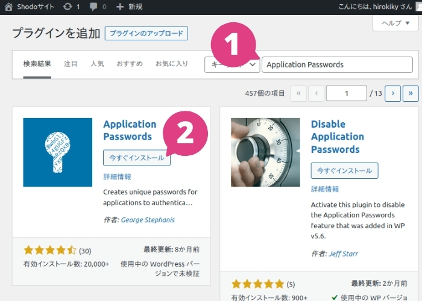
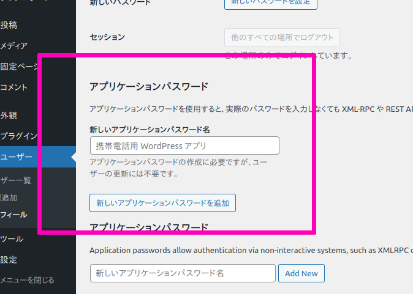

WordPress.orgとの連携を設定する¶
Shodoで執筆・レビューした記事をWordPressに投稿できます。 クリック1つで、画像を含めた記事の下書きが作成されます。
WordPress.orgはお客様自身のサーバーやレンタルサーバーで運用されているWordPressです。 WordPress.com とは違うものとなりますのでご注意ください。
WordPress.org連携ができるか確認する¶
ご利用のWordPressが以下3つの項目を満たしているか確認していきましょう。
REST APIに対応している必要があります
外部から「https」でREST APIへアクセスできる必要があります
Application Passwords というプラグインが必要です
順に準備の方法を説明しますが、難しい場合はシステムの管理者にお問い合わせください。
REST APIに対応しているか確認する¶
WordPressで配信されているお客様のサイトのURLをご用意ください。この例では https://www.shodo.ink/ として説明します。
WordPressのURLに /wp-json/wp/v2/ を追加して、ブラウザー（GoogleChromeやFirefox）でアクセスしてください
（たとえば https://www.shodo.ink/wp-json/wp/v2/ というURLとなります）。
アクセスした際に、白い背景に文字が表示されたでしょうか？画面の一番左上に「namespace: "wp/v2"」のように表示されていれば成功です。
もしうまくいかない場合、サイトのURLに ?rest_root=/wp/v2/ とだけ追加したURLでお試しください
（たとえば https://www.shodo.ink/?rest_root=/wp/v2/ というURLになります）。
この両方でうまくいかない場合、システムの管理者にお問い合わせください。 成功した場合は、どちらのURLでアクセスできたかを覚えておいてください（あとで設定値として利用します）。
httpsに対応しているか確認する¶
WordPressで動作しているサイトのURLは https://... になっていますか？もし http://... の場合、Shodoからの連携はできません。
httpsの対応はShodoから安全に記事を連携するために必須となりますので、httpsに対応のうえご利用ください。
Application Passwordsプラグインをインストール・有効化する¶
WordPress製のサイトへ外部のアプリケーションからアクセスするために、 Application Passwords というプラグインが必要です。
WordPressの管理画面から、「プラグイン」→「新規追加」を選びます。

プラグインの検索に Application Passwords と入力します。
Application Passwords というプラグインをインストールし、有効化してください。

インストール後、「有効化」ボタンをクリックするのを忘れないようご注意ください。
ShodoにWordPress連携を設定する¶
準備ができれば、ShodoからWordPressへ連携する設定を始めましょう。
ユーザーアカウントとアプリケーションパスワードを用意する¶
ShodoからWordPressに投稿する際のユーザーをご用意ください。
権限グループが「投稿者」である、記事を投稿する専用のユーザーを必ずご用意ください。 すでに利用している投稿のみ可能な共通ユーザーがあれば、そのユーザーアカウントで問題ありません（「管理者」ユーザーなどを利用しないようご注意ください）。

当該の投稿用ユーザーの設定画面を開いて、下部にある「アプリケーションパスワード」という項目からアプリケーションパスワードを追加します。
「新しいアプリケーションパスワード名」に「Shodo」と入力し、「Add New」ボタンをクリックしてください（アプリケーションパスワード名は任意の名前を設定いただけます）。

Your new password for Shodo is [パスワード] と表示されれば、そのパスワードをコピーしてください
（ダイアログを閉じると、パスワードは2度と表示されなくなります）。

Shodoの設定画面にペーストする¶
Shodoの配信設定画面に移動してください。 プロジェクトの画面から、サイドバーの「設定」→「配信」をクリックしてください。

WordPress.orgの連携設定から、以下のように入力してください。
WordPressサイト名︰運営しているサイト名（Shodo上での表示用）
APIルート︰
上記で確認したサイトのURL（https://www.shodo.ink など）
上記で確認したAPIの種類（
/wp-json/wp/v2/か?rest_route=/wp/v2/か）
ユーザー名︰WordPressに投稿するユーザー名
アプリケーションパスワード︰上記でコピーしたパスワード
APIルートのURLはお間違いないようご注意ください。
すべての項目を入力して「配信設定を追加する」をクリックすれば設定は完了です。 記事の配信時にエラーが発生した場合は、プラグインが正しくインストールされているかや、設定したURLやユーザー名が正しいかを再度ご確認ください。
注意事項¶
Shodoは入力されたURLに対し、記事の本文やアプリケーションパスワードを送信します。 誤ったURLを設定した場合、そのURLに対して秘匿な情報が送信されてしまいます。 もし誤ったURLを設定してしまった場合は、作成したアプリケーションパスワードを「取消」して再発行してください。
また、Shodoからご利用のWordPressに記事を配信する際は、インターネット経由で送信されます。 VPNや専用回線、IP制限などは利用できませんのでご了承ください。
Shodoから記事をWordPressに配信する¶
執筆画面の「配信」タブから、設定したWordPressに記事を配信できます。

記事の内容だけでなく、画像も同時にWordPressに投稿されます。 クリック1つで記事を作成できますので、Shodo上でしっかり原稿を仕上げてからすぐに記事の公開作業に移れます。
なるべく Shodo上でチーム内の相互レビューをしてからWordPressに記事を作成することをお勧めします 。